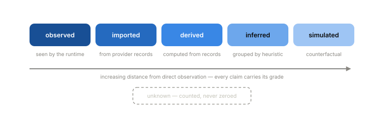

A traditional service receives a request, runs code selected by engineers, and emits events that can be interpreted against a stable deployment artifact. An AI runtime assembles execution on the fly from model calls, prompts, retrieved context, tool calls, planner choices, provider failures, cache decisions, policy checks, retries, fallbacks, and human approvals. The behavior is dynamic, expensive, consequential, and hard to reconstruct after the fact.
That shift moves the evidence boundary. The runtime path is the only place where the full execution can be observed while it is happening, which creates a new engineering obligation: the runtime must emit evidence that survives the execution. If it cannot preserve the facts that matter, the organization is left with sampled logs, provider dashboards, screenshots, and speculation.
Forensic integrity is the discipline that meets the obligation. A runtime has it when later claims about execution can be traced back to preserved records — or explicitly marked uncertain. The test is one question: can the operator prove what the system did, and name what cannot be proven?
Why existing observability doesn’t provide this
Logs, metrics, traces, and model monitoring stay useful. They do not form a forensic record.
Logs are sampled, rewritten by retention tooling, and treated as operational exhaust. Metrics aggregate, and aggregation destroys the individual evidence trail needed to explain why a specific workflow spent money or escalated. Traces preserve chronology, and chronology is weaker than causality: a span can precede another span without causing it. A cache miss causes a model call. A timeout causes a retry. A policy rule blocks a tool call. Those are causal claims, and causal claims need explicit records, not inference from timestamps.
Model monitoring watches the model. Forensics has a wider subject: the operational system around the model, including routing, provider execution, attribution, retries, policy versions, tool calls, human actions, and economics.
Two commitments
Every claim carries an evidence grade. Observed, imported, derived, inferred, or simulated.

An inferred retry grouping is labeled inferred. A simulated counterfactual is labeled simulated. Unknown values stay unknown — missing provider usage is not zero, and missing pricing is not free. A forensic system that pretends to know everything is worse than an incomplete one that labels its gaps. This distinction is the difference between an investigation and a dashboard.Body-free by default. The evidence layer records identifiers, hashes, versions, timing, outcomes, and bounded classifications. It does not need prompt bodies or response payloads to explain behavior, and it should not retain them by default.
Forensic integrity is a property of the evidence system, not a claim about model quality. A model can answer correctly while the runtime preserves nothing; a model can answer incorrectly while the runtime preserves excellent evidence about how that happened. The discipline concerns proof.
The full paper
Paper 1 develops the argument in depth: the evidence model, the capture approach and its constraints, how evidence quality is measured and reported, how derived artifacts stay verifiable, a worked reference scenario, failure modes when the discipline is absent, and open problems. The full paper is available to teams we work with — here’s what we publish and what we gate.
Next: Paper 2 — Economic Forensics, which applies the proof requirement to spend.